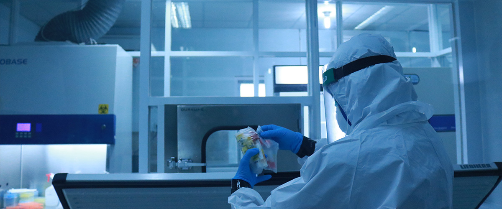
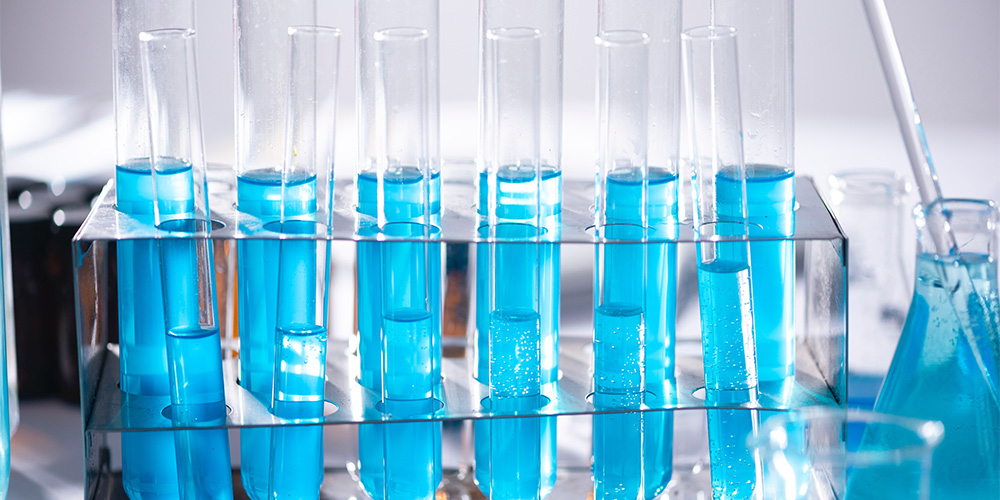

> 연구개발 > 연구본부
연구본부
글로벌 제약기업을 향해 도약하는 동아ST입니다.

연구본부는 동아ST의 원동력입니다.
연구본부는 “혁신적 의약품으로 존경 받는 세계적 수준의 기업”이라는 회사의 비전에 따라 혁신신약, 글로벌 브랜드 신약개발, DDS 개량신약 및 바이오의약품 연구개발을 통해 R&D 중심의 세계적 제약사로 도약하는 원동력이 되고자 합니다.
-

- 세계적인 제약회사들과 경쟁하기 위하여 핵심 연구역량을 배양하고 있습니다.
- 연구본부는 지속적인 R&D 투자를 통해 국제규격의 인프라를 구축해 나가고 있으며, 차별화된 기술 도입을 위해 국내외 전문가들과 폭넓은 공동연구 체제를 구축하는 한편, 세계적인 제약회사 및 연구기관들과 전략적 제휴 관계를 쌓아 혁신적 의약품 개발을 추진하고 있습니다.
-
- 연구본부의 핵심 경쟁력은 우수한 연구 인력입니다.
- 연구본부는 국내 최고의 우수 연구 인력을 확보하고 있으며, 다양한 교육 기회를 제공하여 동아ST를 세계적 연구기업으로 이끌 핵심 인재를 육성하는데 역점을 두고 있습니다. 또한, 글로벌 규격의 연구단지와 더불어 국내외 고급 인력을 적극적으로 채용, 양성함으로써 세계적인 제약회사들과 경쟁하기 위한 혁신적 의약품 개발 연구에 더욱 박차를 가할 것입니다.